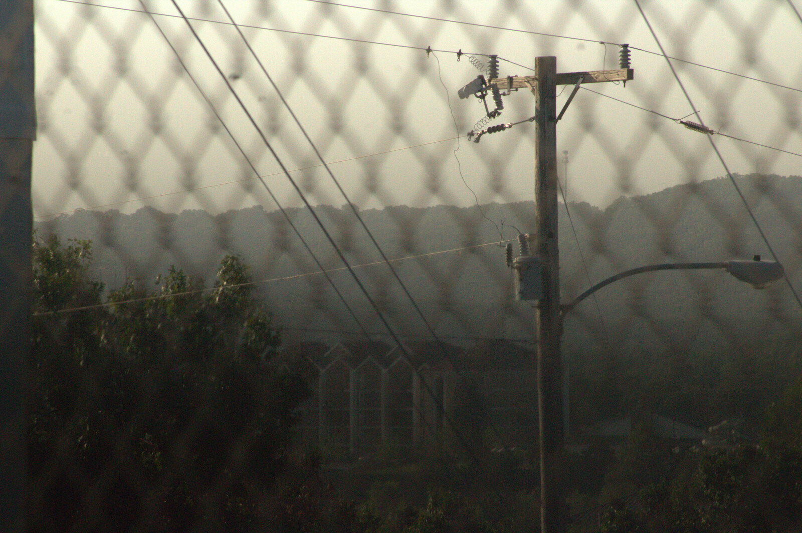
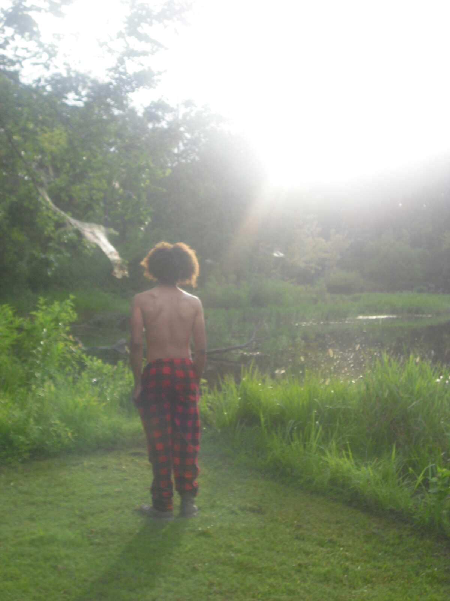
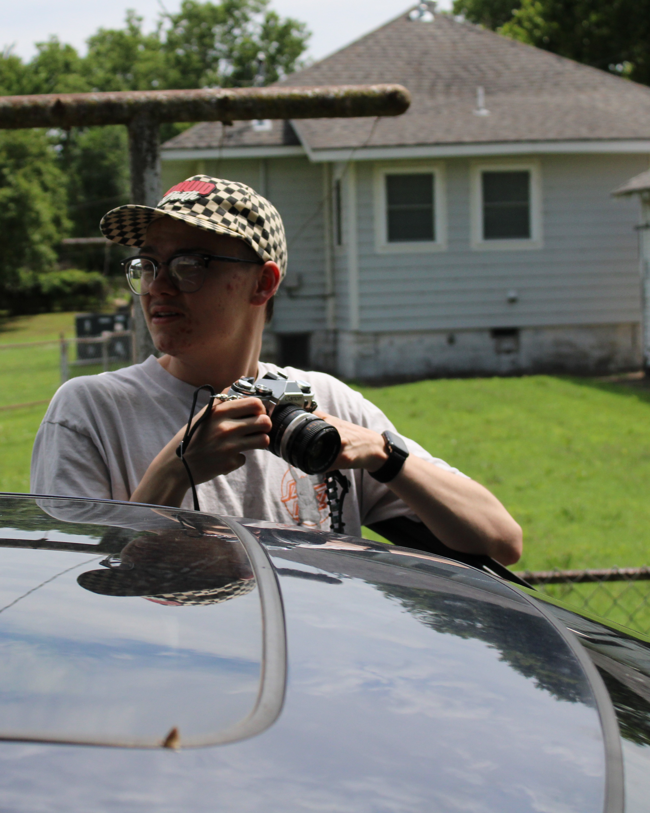
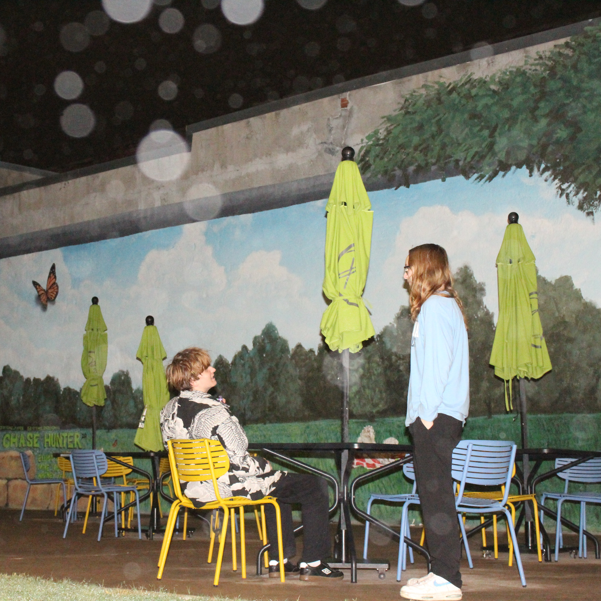
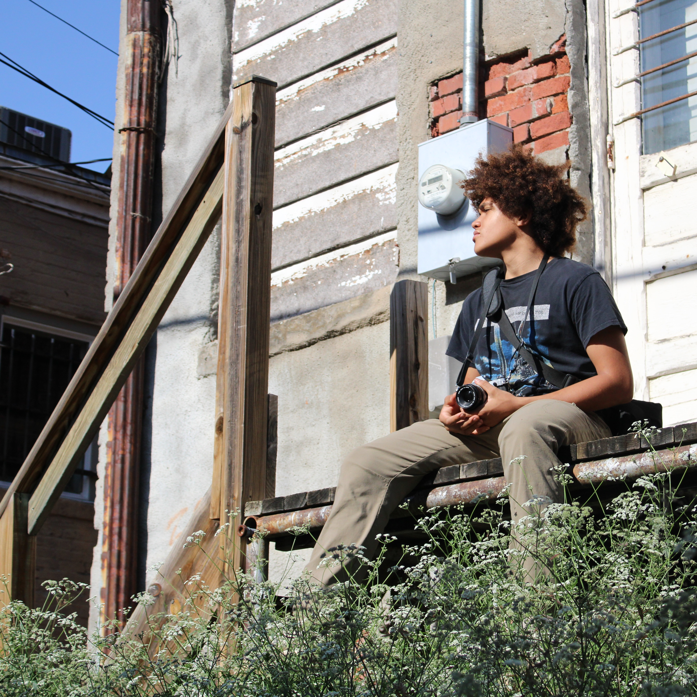
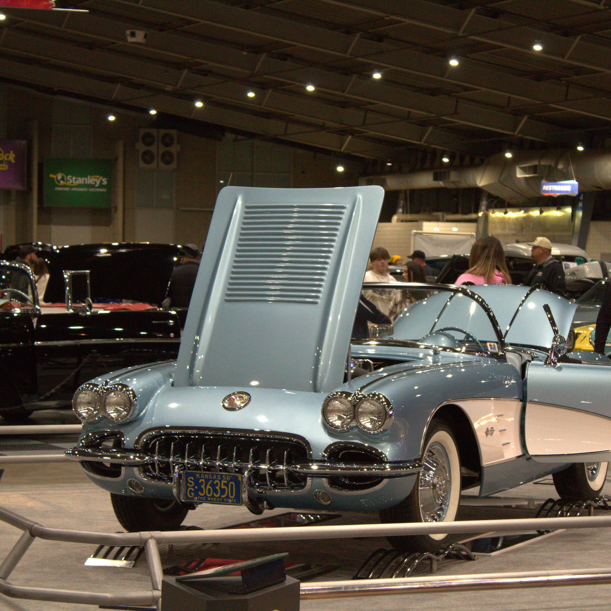
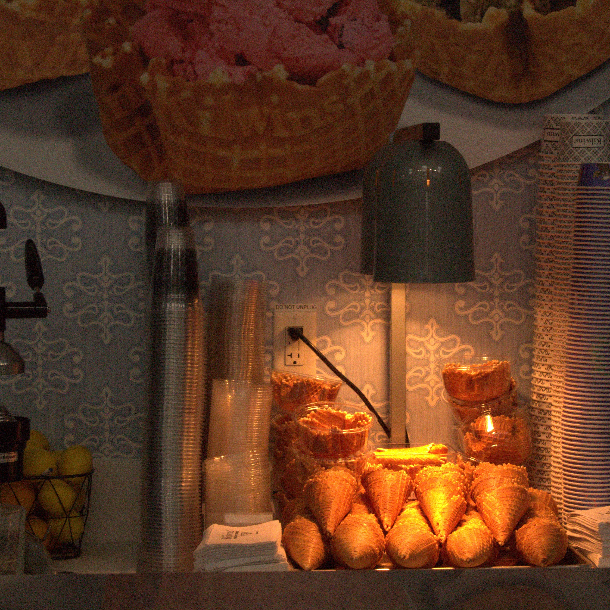

Photographs that don't ask you to perform.
Based in Kansas. Working in natural light, mostly outdoors, mostly in silence.
Scroll
Based in Kansas. Working in natural light, mostly outdoors, mostly in silence.






Good photography shouldn't be a luxury. My goal is simple — give people honest, beautiful photos of themselves and the people they love, without the price tag usually attached to it.

I was born and raised in Kansas and don't know much else. Grew up with one working eye due to a birth defect called PHPV and always felt uncomfortable in front of a camera so I decided to be the one behind it. That's when I realized I absolutely love the ability to supply someone with a beautiful photo of themselves or loved ones.
I started photography somewhere around 2021 on a borrowed camera before quickly realizing it was something I wanted to take seriously. I was lucky enough to take a high school class with my own camera and learn how to work this amazing and complicated device. Now I use the eye for photos that I have to supply others with experienced photography affordable to anybody.




(620)-714-0552 (texts only, won't accept calls)